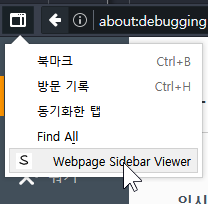

Webpage Sidebar guide
Adding sites
 add sites on the addon button panel.
add sites on the addon button panel.
Opening sites
 open by clicking links on the addon button panel.
open by clicking links on the addon button panel.
Opening sidebar

Since firefox WebExtensions api does not support opening sidebars in programatical way, you need to open it manual.